Article
Abstract
A fast procedure for calculation of spatial impulse responses for linear sound fields is presented. The procedure applies to transducers, which can be represented by a set of convex polygons and it is tailored to exploit data level parallelism as well as concurrency. The procedure is implemented on a modern single instruction, multiple data (SIMD) architecture and used for computing time-harmonic and transient pressure fields. It can be used for both near and far field simulations, since it uses the well known technique of calculating the spatial impulse response from the intersection of a circle emanating from a projected spherical wave with the boundary of the emitting elements. Finally, the performance and accuracy is compared to current state-of-the-art simulation methods including a fast implementation using the far field approach.
Introduction
Computer simulations are used intensively for developing and evaluating the performance of ultrasound models, beamformers, and signal processing methods applied to ultrasonic data. In therapeutic ultrasound, e.g. high-intensity focused ultrasound (HIFU) or lithotripsy, time-harmonic pressures are used for computation of the energy deposition and subsequent heat transfer calculation. For high-bandwidth imaging systems, more challenging computations of transient pressure fields are needed for computing peak negative pressures, which serves as limits for ensuring patient safety. Finally, computer simulations has been used for developing new applications of ultrasound, within structural imaging, flow imaging and more recently strain imaging.
Background
The acoustic field is most easily studied using the Lagrange picture. In the Lagrange picture, an action is formed by expressing the difference of the kinetic and potential energy of the media, which is given as volume integral of a Lagrange density. The kinetic term is quite easy to find, whereas the potential energy can be found from thermodynamics. If the content, which do not contribute to the equations of motion are removed, the free action can be written as [6]
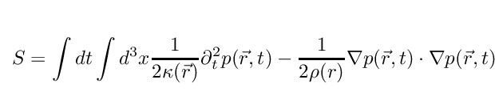
where 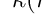 is bulk modules and  is the density. Using the principle of least action,
is the density. Using the principle of least action,  , the acoustic wave equation can easily be derived
, the acoustic wave equation can easily be derived
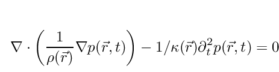
Using Gauss's divergence theorem, the ultrasonic transducer can be added as source term and the pressure at a given point  can be expressed as
can be expressed as
![\begin{eqnarray}\label{eq:1}
&p(\vec{r}_{0},t) = \nonumber \\
&-\frac{1}{4\pi }\int_{S}dS\, \rho^{-
1}(\vec{r})\left[p(\vec{r},t)\frac{\partial
\mathcal{G}(\vec{r},t;\vec{r}_{0})}{\partial n} - \mathcal{G}(\vec{r},t;\vec{r}_{0})\frac{\partial
p(\vec{r},t)}{\partial n}\right],
\end{eqnarray}](../../form_6.png)
where 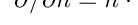 is the derivative in the direction of the surface normal and is the Green's function associated with the problem. Two different solutions exists corresponding to an acoustic hard and an acoustic soft boundary. As noted by Tupholme [18] , the solution can be expressed using a spatial impulse response 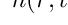. For an acoustic hard boundary the solution is given by
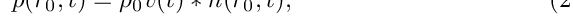
where the asterisk  denote a time-like convolution and
denote a time-like convolution and  is the derivative of the particle velocity near the surface. The spatial impulse response can be derived from 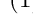 by imposing a Neumann boundary condition corresponding to an acoustic hard boundary. It is given by [17] .
is the derivative of the particle velocity near the surface. The spatial impulse response can be derived from 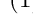 by imposing a Neumann boundary condition corresponding to an acoustic hard boundary. It is given by [17] .
![\[
h(\vec{r}_{0},t) = \int_{S}dS\frac{\delta (t - | \vec{r} - \vec{r}_{0}|/c)}{2\pi |\vec{r}-\vec{r}_{0}|}.
\]](../../form_14.png)
From this equation, it follows that computing the acoustic pressure is a purely geometrical. For a fixed time,  , the spatial impulse response is given by length of intersection of a sphere centered at intersecting the transducer surface. This interesting feature has led to the derivation of many closed-form spatial impulse response functions for common transducer geometries such as circular pistons [15] , rectangular pistons [13] , triangular pistons [10] , curved [16] and spherical geometries [12] . The solution for an acoustic soft boundary, where the pressure on the surface is zero, the spatial impulse response is given by
, the spatial impulse response is given by length of intersection of a sphere centered at intersecting the transducer surface. This interesting feature has led to the derivation of many closed-form spatial impulse response functions for common transducer geometries such as circular pistons [15] , rectangular pistons [13] , triangular pistons [10] , curved [16] and spherical geometries [12] . The solution for an acoustic soft boundary, where the pressure on the surface is zero, the spatial impulse response is given by
![\[
h(\vec{r}_{0},t) = \int_{S}dS\cos{\varphi }\frac{\delta (t - |\vec{r}-\vec{r}_{0}|/c)}{2\pi |\vec{r}-\vec{r}_{0}|},
\]](../../form_16.png)
where  is the angle between a line passing through the field point and normal to the transducer, and a line passing through and the intersection of the spherical wave and the transducer surface. For a fixed time , the cosine factor,
is the angle between a line passing through the field point and normal to the transducer, and a line passing through and the intersection of the spherical wave and the transducer surface. For a fixed time , the cosine factor,  is given by 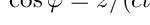, where
is given by 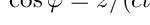, where  is the distance from the field point to the transducer surface. The easy generalization to include a soft boundary applies to all geometries mentioned above.
is the distance from the field point to the transducer surface. The easy generalization to include a soft boundary applies to all geometries mentioned above.
When Computing transient pressure fields using eq. 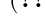, the time derivative of the particle velocity is evaluated from the excitation pulse and the convolution is evaluated using the fast Fourier transform (FFT). Computation result reveal that the spatial impulse response contains both low and high frequency content, whereas the excitation is band-limited. To exploit this, it was suggested by D'Hooge to differentiate instead the spatial impulse and compute the pressure according to [5]
where is the time-derivative of the spatial impulse response. In this way, a much lower sampling frequency can be used for simulating the transients.
Another much earlier attempt for reducing the complexity for computing transients is the simplified trapezoidal impulse-response model used by the simulation tool Field II [8] . It is based on analytical expressions for the impulse response derived by Tupholme [18] and Stepanishen [17] . Instead of computing the arc length of the spheres intersecting the elements, the elements are divided into multiple rectangular sub-elements and a far field approximation is made, which means that intersection are computed between sub-elements and planar waves rather than a sphere. For completeness, the formulas are given here for the far field approximation used by e.g. Field II. Given a rectangular sub-element spanned by vectors and  and a field point
and a field point  , compute the following two lengths
, compute the following two lengths
where  is the length of . The up to four different arrival times for the plane wave can then be calculated by
is the length of . The up to four different arrival times for the plane wave can then be calculated by
The amplitude of the trapezoidal response is a function of piston area and distance to the field point and is given by
where and are given by
The shape of the response depends on and , but the area of the trapezoid integrated over the whole time interval is always equal to , where and is the width and the height of the sub-element. It can be shown, that this approximate response is valid for situations, where . For many simulation applications, this approximation is perfectly valid and satisfactory results can be obtained without using many sub-elements. An application which require many sub-elements is the computation of the peak-negative pressure, since in an attenuating media the location of this peak lies in the very near-field.
Another more recent approach for reducing the complexity for computing in particularly time-harmonic pressures is a frequency domain approach introduced by McGough [14] . For a rectangular element, the Fast Nearfield Method (FNM) uses the closed-form expression for the spatial impulse response for a field point above the corner of the rectangle [13] ,
![\[
h(z,t)=\left\{\begin{array}{@{}l l r@{\ t\ }l}
c/(2\pi) \left\{\frac{\pi }{2} \right\} & \mathrm{for } &
\frac{z}{c}\leq & \leq \frac{\sqrt{z^{2}+a^{2}}}{c}\\
c/(2\pi) \left\{\frac{\pi }{2} -
\arccos{\left(\frac{a}{\sqrt{c^{2}t^{2}-z^{2}}} \right)}\right\} & \mathrm{for } &
\frac{\sqrt{z^{2}+a^{2}}}{c} \leq & \leq \frac{\sqrt{z^{2}+b^{2}}}{c}\\
c/(2\pi) \left\{\frac{\pi }{2} -
\arccos{\left(\frac{a}{\sqrt{c^{2}t^{2}-z^{2}}} \right)} -
\arccos{\left(\frac{b}{\sqrt{c^{2}t^{2}-z^{2}}} \right)}\right\} & \mathrm{for } &
\frac{\sqrt{z^{2}+b^{2}}}{c} \leq & \leq \frac{\sqrt{z^{2}+a^{2}+b^{2}}}{c}\\
\end{array} \right.,
\]](../../form_39.png)
where the side lengths of the rectangle, and are selected such that .
Using some algebra, the Fourier transform of this equation can be written as [14] .
Equation can be used to very accurately compute the time-harmonic pressure not just above the corner but at any point using the principle of superposition. This method is used as a reference in this work. FNM has been developed further for other geometries [4] as well as to include the computation of transient fields using time-space decomposition for a range of excitation functions [11] and for a general frequency domain signal [1] . This method is very fast, but for wide-band pulses, where many frequencies are needed, it is beneficial to use a time-domain method instead.
Contribution
The simulation tool Field II can be used for simulating transients using the simplified far field approximation (default), a closed form solution for triangles [10] or a closed form solution for an arbitrary polygon by specifying the transducer boundaries using lines [9] . What motivated this work was that using the accurate methods was 2 orders of magnitude slower than using the far field approximation. Since modern computers are extremely fast and support both instruction level parallelism as well as concurrency, the bottleneck for algorithms is often memory access rather than computational power. This suggests that it should be possible to formulate an algorithm, which eliminates the need for using the far field approximation. (DIES HERE)
Instead of computing the impulse response by first computing arrival times, possibly followed by sorting and expensive line-sphere intersections, the method described here is generic and is tailored for a modern single instruction, multiple data (SIMD) architecture. The algorithm is best explained by the simple drawing of arc segments computed for a triangle and an rectangle in Fig.
The procedure is as follows. Project the field point into a plane containing the element. For each vertex-edge pair, compute 3 contributions corresponding to: 1. The projection lies in a position, where the projected circle for a time intersects the edge in two positions, 2. The projection lies in a position, where the projected circle intersects the edge such that the continuation of the circle after the intersection continues clock-wise. 3. The projection lies in a position, where the circle intersects the edge such that the continuation of the circle is counter clock-wise. For each contribution, two angles are computed, and such that the arc segment is the difference between the two angles, . If the arc is passing its vertex in a counter clock-wise direction, the angle is set equal to the angle corresponding to the normal of the previous edge. An example of this is the limits of outer red segments in Fig. The outer red segments start from an angles, which correspond to the normal of the cyan contribution. If the arc is passing its next vertex in a clock-wise direction, the angle  is set equal to the angle of a normal of the current edge. A simple mask constructed using the distances from the field point to the vertices and signed distances from the projection to lines is used for selecting one of the 3 contributions. This mask is needed once for each field point, but there is no need to compute this for each sample. Segments are computed described for all vertex-edge pairs and finally, the angular contribution to the impulse response is minus the sum of all vertex-edge segments. The neat things is that all segments can be computed independently. It is in fact possible to simulate a full ultrasound pressure field for a rectangular element, by simulating 4 fields, a field for each of the vertices. This observation is particularly useful for massive parallel computation, e.g. computation using GPUs.
is set equal to the angle of a normal of the current edge. A simple mask constructed using the distances from the field point to the vertices and signed distances from the projection to lines is used for selecting one of the 3 contributions. This mask is needed once for each field point, but there is no need to compute this for each sample. Segments are computed described for all vertex-edge pairs and finally, the angular contribution to the impulse response is minus the sum of all vertex-edge segments. The neat things is that all segments can be computed independently. It is in fact possible to simulate a full ultrasound pressure field for a rectangular element, by simulating 4 fields, a field for each of the vertices. This observation is particularly useful for massive parallel computation, e.g. computation using GPUs.
Results
Three methods were implemented. An SIMD implementation of the far field approach  , the proposed method illustrated in Fig. as well as the fast near method, which was used for reference. Goertzel's algorithm was used for extracting the time-harmonic pressure from the time-like pressure transients computed using the far field approach or the proposed method. In Fig., the normalized pressure using the proposed algorithm is computed for 64-element focused array.
, the proposed method illustrated in Fig. as well as the fast near method, which was used for reference. Goertzel's algorithm was used for extracting the time-harmonic pressure from the time-like pressure transients computed using the far field approach or the proposed method. In Fig., the normalized pressure using the proposed algorithm is computed for 64-element focused array.
Conclusion
From the results in Table , it follows that in order to achieve accurate results, the proposed method is fast enough to eliminate the need for using the far field approximation.
It will be interesting to investigate this further for other applications, e.g. imaging.